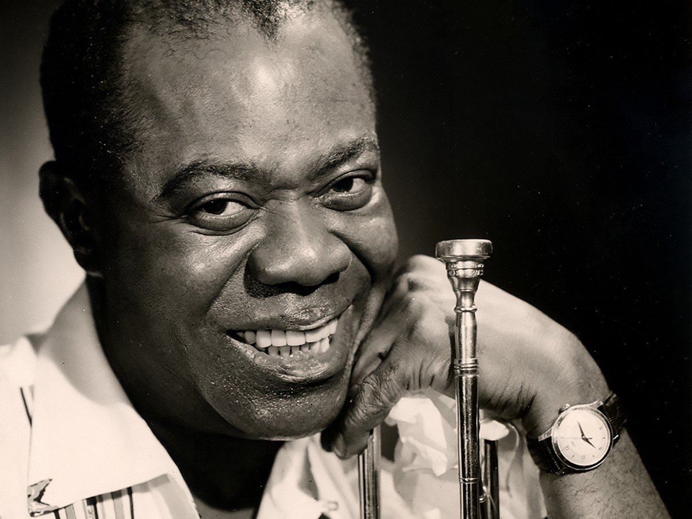

Louis Armstrong
Армстронг Дэниел Луи "Сэчмо" ("Сэчелмаут", "Гейтмаут", "Диппер-маут", "Диппер", "Фэйс", "Попс", "Литл Луис", "Кинг оф Джаз", "Амбассадор Сэтч"). Великий американский джазовый музыкант, трубач, корнетист, вокалист, руководитель оркестра, композитор. Дату своего рождения точно не знал и, скорее всего, выбрал ее произвольно - 4 августа 1901 года; более правдоподобная версия - 1898 год. Рос в бедной, неблагополучной семье. Мать - прачка, нелегально занималась проституцией. Отец - рабочий-поденщик. Воспитывался бабушкой.
С детства был вынужден самостоятельно зарабатывать на жизнь продавцом газет, разносчиком угля, старьевщиком и тому подобное. В Сторвилле (новоорлеанском "квартале развлечений") слышал многих музыкантов раннего джаза, пел в уличном вокальном ансамбле, играя также на барабанах. За случайный озорной поступок, стрельбу на улице из пистолета, похищенного у полисмена - одного из "посетителей" матери, попал в 1913 г. в исправительный дом. Здесь, несмотря на трудности, начал учиться музыке, освоил альтгорн и корнет, выступал в составе духового оркестра и хора.
После освобождения вернулся домой, перебивался редкими заработками, играл в барах с любительскими ансамблями, продолжал учиться у новоорлеанских музыкантов. Благодаря знакомству с "Кингом" Оливером и по его рекомендации, был принят в оркестр "Кида" Ори на место Оливера, уехавшего в Чикаго. Выступал в Tuxedo Braes Band Оскара "Папы" Селестина, с Полом Домингезом, "Затти" Синглтоном, Албертом Николсом, "Барни" Бигардом, Луисом Расселлом, в ривербот-бэндах, в том числе в Jazz-E-Sazz Band "Фэйта" Мэрэйбла.
В этот период стал профессиональным музыкантом. По приглашению "Кинга" Оливера в 1922 переехал в Чикаго, играл в его Creole Jazz Band в течение 2-х лет как второй корнетист, затем перебрался в Нью-Йорк, где выступал как трубач и певец с оркестром Флетчера Хендерсона. Участвовал в записях Blue Five Кларенса Уильямса. Кроме того, записывался на пластинки в составах различных аккомпанирующих ансамблей со многими блюзовыми и джазовыми вокалистами (Гертрудой "Ма" Рэйни, "Трикси" Смит, Кларой Смит, Бесси Смит, Албертой Хантер, Мэгги Джонс, Евой Тейлор, Вирджинией Листон, Маргарет Джонсон, "Сипи" Уоллес, Перри Брэдфордом). По истечении срока ангажемента у Ф. Хендерсона, в 1925, вновь работал в Чикаго, - прежде всего с Лил Хардин, пианисткой из Creole Jazz Band, которая состояла в браке с Армстронгом в 1924-38г.г., в 1925 году организовала вместе с ним собственный оркестр, позднее у Эрскина Тэйта в театральном шоу-бэнде.
С ноября 1925 Луи начал записываться с созданными им студийными ансамблями Hot Five (при участии "Кида" Ори, Джонни Доддса, Джонни Сент-Сира и Л. Хардин, позднее - Фреда Робинсона, Джимми Стронга, Эрла Хайнса, "Затти" Синглона и других) и Hot Seven (с мая 1927, когда к квинтету примкнули Пит Бриггс и "Бэби" Доддс). В 1926 солист оркестра Кэрролла Диккерсона, послеухода которого возглавлял этот коллектив (1929). В течение короткого периода времени в 1927 руководил собственным оркестром (Louis Armstrong And His Stomperts), участниками которого были Бойд Аткинс, Джо Диксон, Эл. Вашингтон, Эрл Хайнс, "Рип" Бассет, П. Бриггс, "Табби" Холл. В тот же период выступал в дуэте с Эрлом Хайнсом, в оркестре Кларенса Джонса, гастролировал в различных городах США (в 1929 - в Нью-Йорке, где сотрудничал с оркестром Л. Расселла и "Дюка" Эллингтона, затем в Калифорнии - с оркестром Леона Элкинса и Леса Хайта, участвовал в киносъемках в Голливуде). В 1931 посетил с биг-бэндом Нью Орлеан; вернувшись в Нью-Йорк, играл в Гарлеме и на Бродвее. В 30-е годы совершил ряд турне в Европу и Северную Африку, что принесло ему широкую известность не только за рубежом, но и на родине. Прежде в США он был популярен главным образом у негритянской публики.
В промежутках между гастролями выступал с оркестром Чарли Гейнза, "Чика" Уэбба, "Кида" 0ри, Л. Расселла и другими, с вокальным квартетом Mills Brothers, в многочисленных театральных постановках и радиопрограммах, снимался в кинофильмах, С 1933 вновь руководит джаз-бэндом. Опубликовал автобиографическую книгу "Swing That Music (Нью-Йорк, 1936)". Перенес несколько операций, связанных с лечением давней профессиональной травмы верхней губы ( деформация и разрыв тканей из-за чрезмерного давления мундштука и неправильного амбушюра), а также операцию на связках. С ее помощью безуспешно пытался избавиться от хриплого тембра голоса. Впоследствии он осознает его ценность, как неповторимую индивидуальность своей вокальной манеры. В дальнейшем популярность Армстронга продолжала возрастать, благодаря его неутомимой и разносторонней музыкальной деятельности. Наиболее примечательны выступления во главе All Star Band (с Джеком Тигарденом, "Бадом" Фрименом, "Фэтсом" Уоллером, "Барни" Бигардом, Эрлом Хайнсом, Сидом Кэтлеттом, "Кози" Коулом, Эдмондом Холлом, "Трамми" Янгом, Билли Кайлом, певицей Велмой Миддлтон). А также совместная творческая работа с Сидни Беше, "Бингом" Кросби, Билли Холидей, Эллой Фицджералд, Оскаром Питерсоном, Саем Оливером и другими "звездами" джаза, участие в джаз-фестивалях (1948 - Ницца, 1956-58 - Ньюпорт, 1959 - Италия, Монтерей), гастроли во многих странах Европы, Латинской Америки, Африки, Азии.
При его содействии организован ряд филармонических джазовых концертов в Таун-холле и на сцене Метрополитен-опера. В 1954 он написал вторую автобиографическую книгу "Satchmo. My Life in New Orleans". Оставил огромное число грамзаписей, в том числе с "Кингом" Оливером (1923), Ф. Хендерсоном (1926), Кл. Уильямсом (1924-25), "Ма" Рэйни, Бесси Смит, П. Брэдфордом (1924), Э. Тэйтом (1926), С. Беше (1926, 40), Джимми Бертраном (1927), Дж. Доддеом, К. Диккерсоном, Эрлом Хайнсом (1928, 1930-31), Ч. Гейнзом, К. Расселлом (1929), Лайонелом Хэмптоном (1930), европейскими музыкантами (с начала 30-х годов), "Чиком" Уэббом (1932), Дж. Дорси (1936), Mills Brothers (1937-38), оркестром Casa Loma (1939), Esquire All Stars, V-Disc All Stars (1944), "Бингом" Кросби, Эллой Фицджералд (1946, 56), С. Оливером, Гордоном Дженкинсом (в начале 50-х годов), с собственным оркестром и All Star Bands.
Творчество Армстронга - своего рода эталон, идеальная "модель" мэйнстрим-джаза - живого и непрерывно эволюционирующего, но отнюдь не "музейного" традиционализма.
Широту его интересов подтверждают сотрудничество и совместные выступления с музыкантами самых разных стилей - диксиленда, свинга и модерн-джаза, с симфонизированными составами, свит-бэндами, исполнителями спиричуэлов и госпелс, церковными хорами, блюзовыми певцами. А также участие в филармонических джазовых концертах, мюзиклах, шоу, музыкальных фильмах (более чем в 50-ти), исполнение джазовой версии оперы Гершвина "Порги и Бесс" (вместе с Эллой Фицджералд). Армстронг создал некую разновидность "поп-джаза", гибко адаптирующуюся к любому стилевому контексту и к любой аудитории, смог удовлетворить вкусы различных категорий слушателей (включая поклонников популярной музыки и шлягера).
Армстронг - едва ли не самая уникальная личность в истории джаза. В своем творчестве он соединил несоединимое: неповторимо индивидуальный тип самовыражения с беспредельной общедоступностью музыки, грубоватую простоту и спонтанность, традиционализм с новаторством, негритянский хот-идеал с европеизированными идиомами свинга и модерн-джаза.
Популярные песни:
What A Wonderful World
Go Down Moses
Wonderful World
Hello, Dolly!
It's Been A Long, Long Time